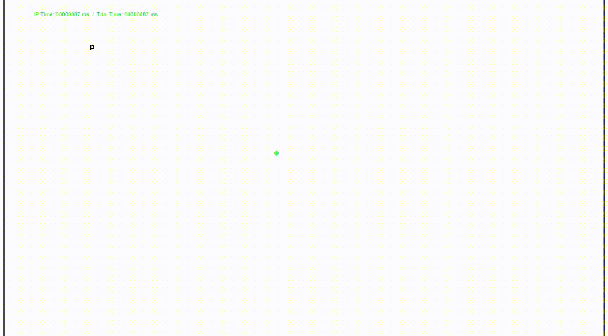
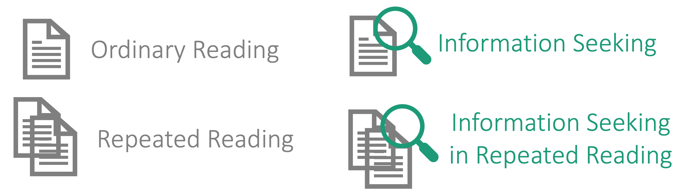
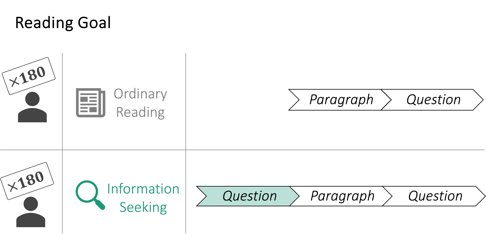
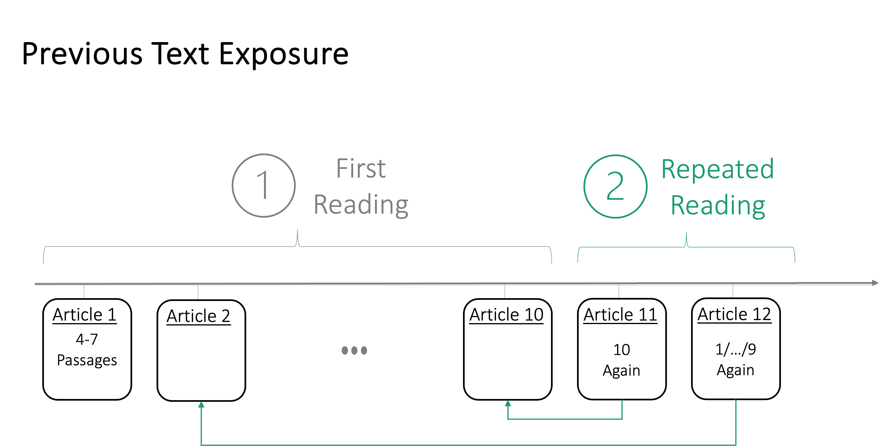
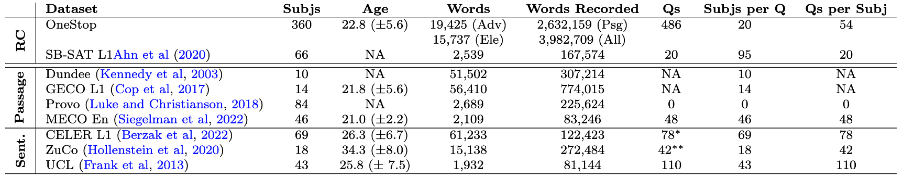
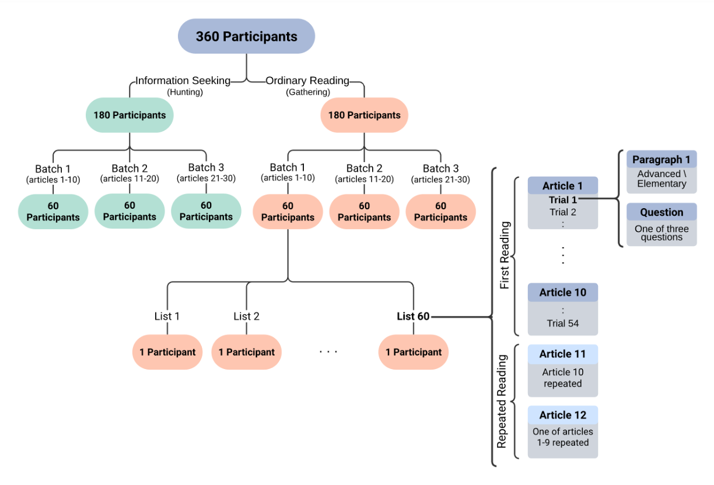
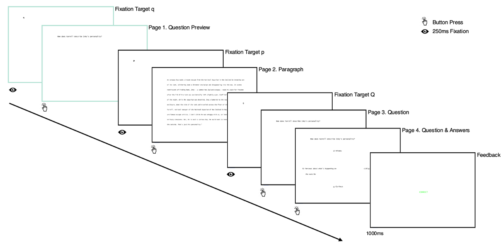

OneStop: A 360-Participant English Eye-Tracking Dataset with Different Reading Regimes#
Example#

Overview#
OneStop One Movements (in short OneStop) is a large-scale corpus of eye movements in reading with 360 participants and over 2.6 million word tokens.
The dataset contains four sub-corpora, one for each of the following reading regimes:
Ordinary reading
Information seeking
Repeated reading
Information seeking in repeated reading
We provide the entire corpus, as well as each of the sub-corpora separately. If you are looking for a general purpose eye-tracking corpus (like Dundee, GECO, MECO and others), we recommend downloading the ordinary reading sub-corpus.
Key Features#
Statistics#
360 English native (L1) speakers
Over 2.6 million word tokens
Texts and Reading Comprehension Materials#
30 articles with 162 paragraphs in English from the Guardian (from
 OneStopQA)
OneStopQA)Each paragraph has two versions: an Advanced version (original Guardian text) and a simplified Elementary version
Extensively piloted reading comprehension materials from
OneStopQA3 multiple-choice reading comprehension questions per paragraph
486 reading comprehension questions in total
Auxiliary text annotations according to the STARC (structured annotations for reading comprehension) annotation guidelines
Controlled experimental manipulations#
Reading regime (ordinary reading, information seeking, repeated reading, information seeking in repeated reading)
Paragraph difficulty level (Advanced or Elementary)
Question identity (one of three possible questions for each paragraph)

Reading Regimes#
In ordinary reading, participants read the text as they would in a typical reading task. In information seeking, participants are given a question before reading the text as well.

Previous Exposure#
Participants first read 10 articles in ‘First Reading’. Then, in ‘Repeated Reading’, two of the previous articles are read again.

Key Statistics#
Statistics of publicly available English L1 datasets for passage reading.

‘RC’ (Reading Comprehension) are datasets over piloted reading comprehension materials. The remaining datasets are general purpose broad coverage datasets over passages and individual sentences. ‘Words’ is the number words in the textual corpus. Note that differently from the other datasets where each participant reads the entire corpus, in OneStop each participant reads about a third of the corpus, 4225.15 (\(SD = 148.9\)) words on average. ‘Words Recorded’ is the number of word tokens for which eye-tracking data was collected. ‘NA’: data not available. Standard deviation in parentheses. \(^{*}\) In 5,283 additional tasks in CELER (78 per participant), participants are required to answer whether a given word appeared in the sentence. \(^{**}\) In 390 additional tasks in ZuCo, participants are asked to determine whether the sentence contains a specific semantic relation.
Experiment Structure#
There are four primary manipulations in the experiment: the reading goal (information seeking vs ordinary reading), the given question, the difficulty level of the text, and whether the text is presented for the first or the second time.

Trial Structure#
Each participant is presented with a practice article consisting of two trials followed by a 10-article batch with 54 experimental trials. At the beginning of each article, a page with the article’s title is presented. The figure below depicts an example of the pages in a single trial in the Hunting and Gathering regimes. Pages presented only in the Hunting regime are depicted in green.

Obtaining the Data#
Data is not yet available. Download instructions will be updated here.
We provide the possibility to download the entire dataset, or any of four sub-corpora:
Ordinary reading (download this data if you are interested in a general purpose eyetracking dataset)
Information seeking
Repeated reading
Repeated reading during information seeking
There are several ways to obtain the data
Download the data directly from the OSF repository.
Use the
download_data_files.pyscript to download and extract the data files automatically.
Direct Download from OSF
The data files are stored in an OSF repository, and can be downloaded manually from the repository.
Python Script
If the repository has been cloned, they can be downloaded and extracted automatically using the following script:
python download_data_files.py --extract
Repository Structure#
The repository is structured as follows:
data/: Metadata files.docs/: Documentation source files.src/: Scripts for preprocessing the data and reproducing the analyses.
Reproducing the Analyses in TODO: Add paper link#
Environment Setup#
Prerequisites#
Mamba or Conda
Setup#
Clone the Repository
Start by cloning the repository to your local machine:
git clone https://github.com/lacclab/OneStop-Eye-Movements.git cd OneStop-Eye-Movements
Create a Virtual Environment
Create a new virtual environment using Mamba (or Conda) and install the dependencies:
mamba env create -f environment.yaml
Activate the Virtual Environment
Activate the virtual environment:
conda activate onestop
Download spacy model
Download the spacy model:
python -m spacy download en_core_web_sm
Running the Analyses#
TODO Fill in
Documentation#
Variables#
The dataset contains three types of variables.
The data variables of the participant Questionnaire file are listed in Table 2 in the OneStop paper.
The variables included in the Session Summary file are provided in Table 3.
The eye movement features in the Fixation Reports and Interest Area Reports are documented in the Data Viewer user manual. Additional variables for the experiment, trials and linguistic annotations are listed in Table 4.
Technical Setup#
See Section “Eye-tracking Setup, Text Presentation and Calibration” in the onestop paper.
Known Issues#
See known issues with the dataset here.
Citation#
Paper: OneStop: A 360-Participant English Eye-Tracking Dataset with Different Reading Regimes (TODO Add link)
@article{Berzak2024OneStop,
title={OneStop: A 360-Participant English Eye-Tracking Dataset with Different Reading Regimes},
author={TODO},
journal={TODO},
year={TODO},
volume={TODO},
number={TODO},
pages={TODO},
doi={TODO}
}
License#
The data and code are licensed under a Creative Commons Attribution 4.0 International License.